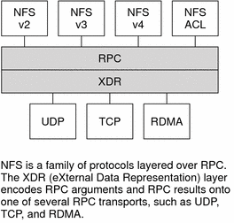

Previous
Previous
snoop Command
This command is often used to watch for packets on the network. The snoop command must be run as root. The use of this command is a good way to ensure that the network hardware is functioning on both the client and the server. Many options are available. See the snoop(1M) man page. A shortened synopsis of the command follows:
snoop [ -d device ] [ -o filename ] [ host hostname ]
- -d device
Specifies the local network interface
- -o filename
Stores all the captured packets into the named file
- hostname
Displays packets going to and from a specific host only
The -d device option is useful on those servers that have multiple network interfaces. You can use many expressions other than setting the host. A combination of command expressions with grep can often generate data that is specific enough to be useful.
When troubleshooting, make sure that packets are going to and from the proper host. Also, look for error messages. Saving the packets to a file can simplify the review of the data.
truss Command
You can use this command to check if a process is hung. The truss command must be run by the owner of the process or by root. You can use many options with this command. See the truss(1) man page. A shortened syntax of the command follows.
truss [ -t syscall ] -p pid
- -t syscall
Selects system calls to trace
- -p pid
Indicates the PID of the process to be traced
The syscall can be a comma-separated list of system calls to be traced. Also, starting syscall with an ! selects to exclude the listed system calls from the trace.
This example shows that the process is waiting for another connection request from a new client.
# /usr/bin/truss -p 243 poll(0x00024D50, 2, -1) (sleeping...)
The previous example shows a normal response. If the response does not change after a new connection request has been made, the process could be hung. Follow the instructions in How to Restart NFS Services to fix the hung program. Review the instructions in NFS Troubleshooting Procedures to fully verify that your problem is a hung program.
NFS Over RDMA
Starting in the Solaris 10 release, the default transport for NFS is the Remote Direct Memory Access (RDMA) protocol, which is a technology for memory-to-memory transfer of data over high-speed networks. Specifically, RDMA provides remote data transfer directly to and from memory without CPU intervention. RDMA also provides direct data placement, which eliminates data copies and, therefore, further eliminates CPU intervention. Thus, RDMA relieves not only the host CPU, but also reduces contention for the host memory and I/O buses. To provide this capability, RDMA combines the interconnect I/O technology of InfiniBand on SPARC platforms with the Solaris operating system. The following figure shows the relationship of RDMA to other protocols, such as UDP and TCP.
Figure 6-1 Relationship of RDMA to Other ProtocolsBecause RDMA is the default transport protocol for NFS, no special share or mount options are required to use RDMA on a client or server. The existing automounter maps, vfstab and dfstab, work with the RDMA transport. NFS mounts over the RDMA transport occur transparently when InfiniBand connectivity exists on SPARC platforms between the client and the server. If the RDMA transport is not available on both the client and the server, the TCP transport is the initial fallback, followed by UDP if TCP is unavailable. Note, however, that if you use the proto=rdma mount option, NFS mounts are forced to use RDMA only.
To specify that TCP and UDP be used only, you can use the proto=tcp/udp mount option. This option disables RDMA on an NFS client. For more information about NFS mount options, see the mount_nfs(1M) man page and mount Command.
Note - RDMA for InfiniBand uses the IP addressing format and the IP lookup infrastructure to specify peers. However, because RDMA is a separate protocol stack, it does not fully implement all IP semantics. For example, RDMA does not use IP addressing to communicate with peers. Therefore, RDMA might bypass configurations for various security policies that are based on IP addresses. However, the NFS and RPC administrative policies, such as mount restrictions and secure RPC, are not bypassed.
How the NFS Service Works
The following sections describe some of the complex functions of the NFS software. Note that some of the feature descriptions in this section are exclusive to NFS version 4.
Note - If your system has zones enabled and you want to use this feature in a non-global zone, see System Administration Guide: Solaris Containers-Resource Management and Solaris Zones for more information.
Version Negotiation in NFS
The NFS initiation process includes negotiating the protocol levels for servers and clients. If you do not specify the version level, then the best level is selected by default. For example, if both the client and the server can support version 3, then version 3 is used. If the client or the server can only support version 2, then version 2 is used.
Starting in the Solaris 10 release, you can set the keywords NFS_CLIENT_VERSMIN, NFS_CLIENT_VERSMAX, NFS_SERVER_VERSMIN, NFS_SERVER_VERSMAX in the /etc/default/nfs file. Your specified minimum and maximum values for the server and the client would replace the default values for these keywords. For both the client and the server the default minimum value is 2 and the default maximum value is 4. See Keywords for the /etc/default/nfs File. To find the version supported by the server, the NFS client begins with the setting for NFS_CLIENT_VERSMAX and continues to try each version until reaching the version setting for NFS_CLIENT_VERSMIN. As soon as the supported version is found, the process terminates. For example, if NFS_CLIENT_VERSMAX=4 and NFS_CLIENT_VERSMIN=2, then the client attempts version 4 first, then version 3, and finally version 2. If NFS_CLIENT_VERSMIN and NFS_CLIENT_VERSMAX are set to the same value, then the client always uses this version and does not attempt any other version. If the server does not offer this version, the mount fails.
Note - You can override the values that are determined by the negotiation by using the vers option with the mount command. See the mount_nfs(1M) man page.
For procedural information, refer to Setting Up NFS Services.